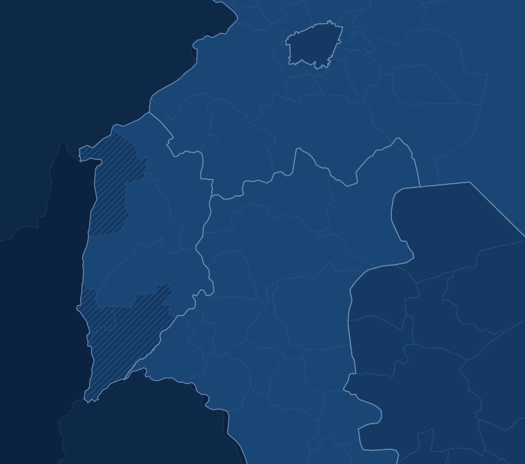

أداة · تُحدَّث يومياً
مركز البيانات
كل انتهاك وثّقه سجل منذ 8 ديسمبر 2024، بتاريخه ومكانه ونوعه. استعرضه على الخريطة، وابحث في الموجزات، وأنشئ تقريراً لأي فترة.
الفترة
طبقة الخريطة
الانتهاكات بحسب الفترة

لبنانالأردندمشقالسويداءالجولانالمحتلجبل الشيخ
القنيطرة 42
درعا 16
ريف دمشق 6
النشاط خلال آخر 10 أيام
الأحدثالأقدم
الجولان السوري المحتل منذ 1967
الفترة التي تغطيها البيانات
كل المحافظات · كل الانتهاكات
بداية التوثيق
08/12/2024
أحدث واقعة موثّقة
23/09/2026
إنشاء تقرير ميداني
اختر الفترة والمحافظات والأنواع، ويُنشئ سجل تقريراً مكتوباً يُعرض على الموقع مباشرة، دون ملف PDF، ويحمل رابطاً ثابتاً قابلاً للمشاركة.
سيشمل التقرير 64 انتهاكاً في 3 محافظات خلال 7 أيام.أنشئ التقرير
الموجزات اليومية والأسبوعية
كل ما أصدره سجل من موجزات، بترتيب زمني. ابحث بيومٍ محدد أو بفترة أو بنوع الموجز.
موجز يومي
5انتهاكات
الأربعاء 23 سبتمبر 2026
القنيطرة، درعا
قيد16865افتح
موجز يومي
11انتهاكاً
الثلاثاء 22 سبتمبر 2026
القنيطرة، درعا
قيد16858افتح
موجز أسبوعي
64انتهاكاً
الموجز الأسبوعي · 15 – 21 سبتمبر 2026
القنيطرة، درعا، ريف دمشق
قيد16849افتح
موجز يومي
17انتهاكاً
الإثنين 21 سبتمبر 2026
القنيطرة، درعا، ريف دمشق
قيد16846افتح
موجز يومي
13انتهاكاً
الأحد 20 سبتمبر 2026
القنيطرة، درعا
قيد16843افتح
موجز يومي
4انتهاكات
السبت 19 سبتمبر 2026
القنيطرة
قيد16840افتح
مركز البيانات
64
انتهاكاً · 15 – 21 سبتمبر

القنيطرة 42
درعا 16
ريف دمشق 6
الأحدثالأقدم
بداية التوثيق
08/12/2024
أحدث واقعة
23/09/2026
أسبوعياً · أغسطس – سبتمبر
بحسب النوع
الموجزات
ابحث بيومٍ أو بفترة.